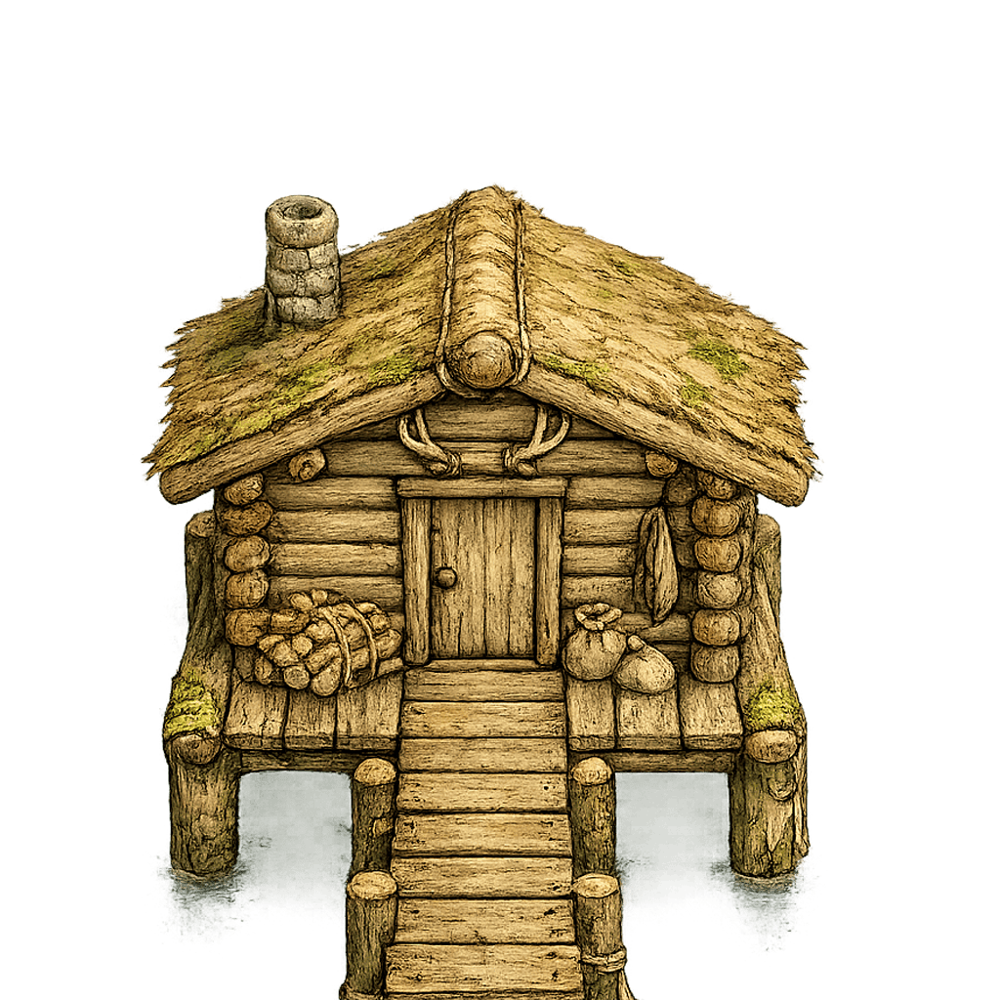
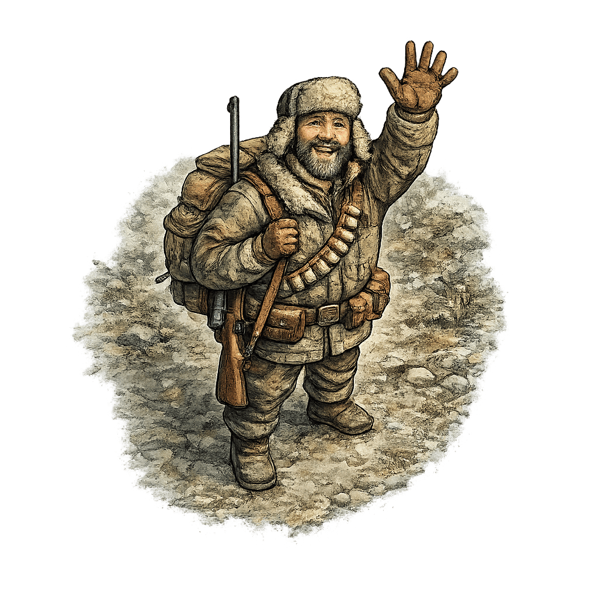

Игра народов Западной Сибири
Таёжный путь
Поворачивай деревянные мостки и собери безопасную тропу через болотистую тайгу от избушки до лабаза.
Ходы
0
Соединено
0%

Кликай по секциям моста, чтобы повернуть их. Избушка и лабаз не вращаются.
Победа
Таёжный путь собран!
Ты нашёл безопасную тропу через болото.
В Западной Сибири люди веками умели ориентироваться среди рек, болот и тайги. Надёжная тропа и внимательность помогали добраться до стойбища, лабаза или охотничьей избушки.
Как играть
Помоги охотнику народов Западной Сибири построить надёжный мост через таёжную реку. Поворачивай деревянные мостики так, чтобы соединить берег с охотничьим лабазом.
- Нажми «Начать игру».
- Щёлкай по деревянным мостикам, чтобы поворачивать их.
- Соедини все части моста в непрерывную дорожку от начала до конца.
- Когда мост будет собран правильно, охотник сможет безопасно перейти через реку.
- Если не получается, попробуй ещё раз — решение всегда существует.
Внимательно продумывай каждый поворот и помоги охотнику найти безопасный путь через тайгу!